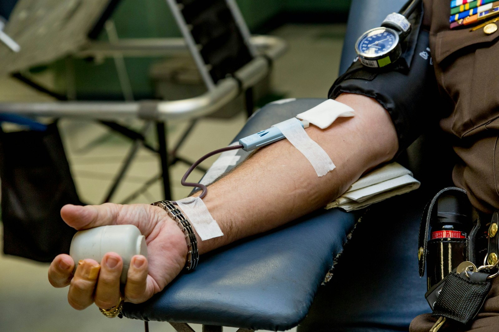
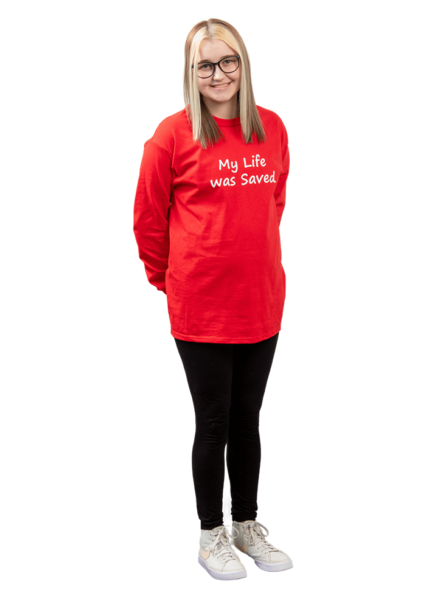
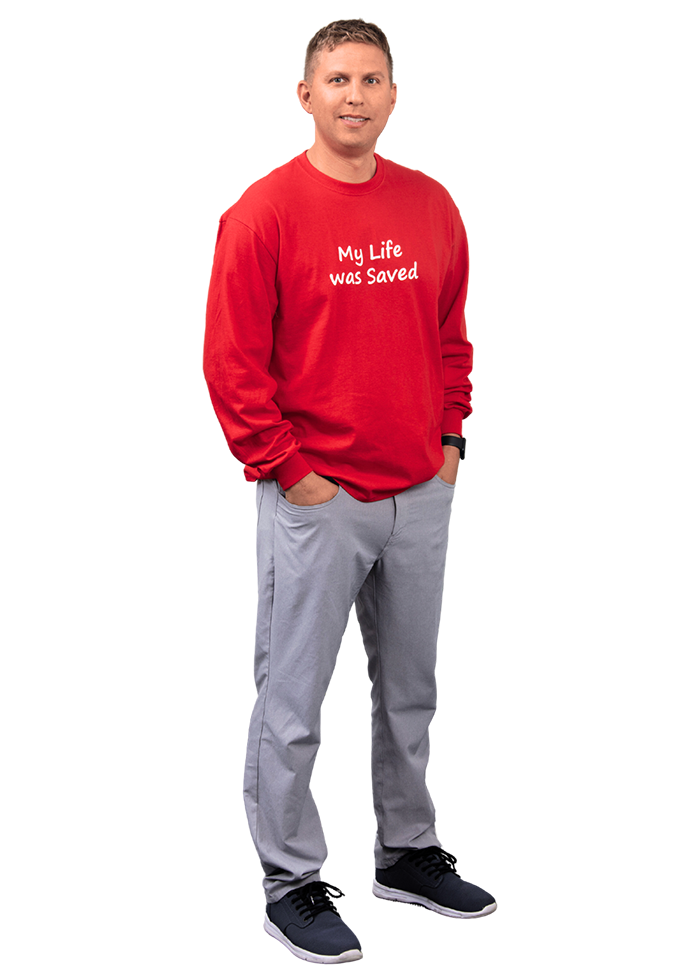
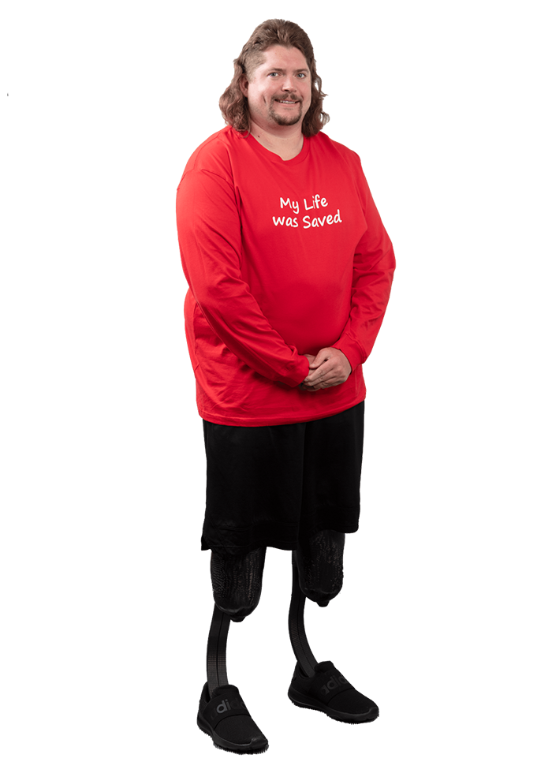
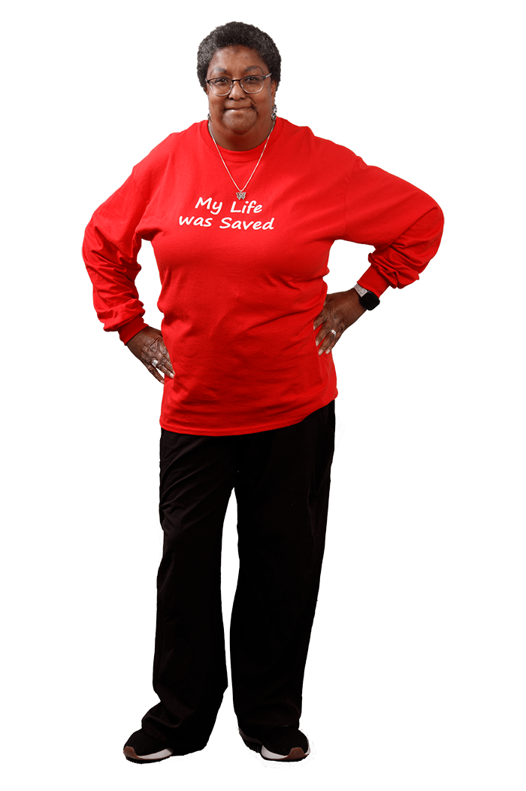
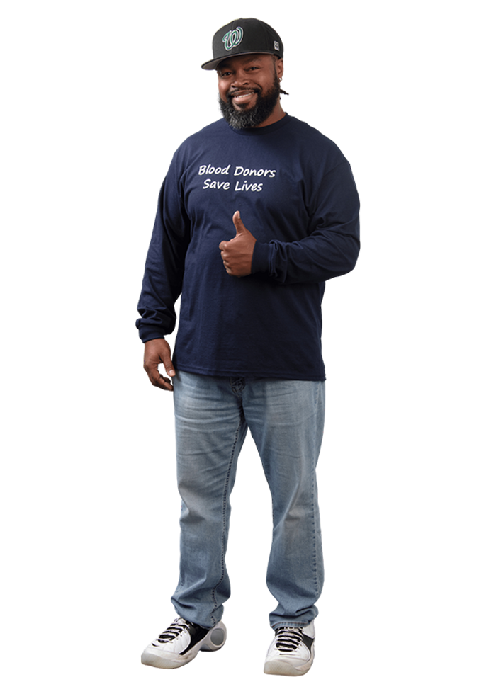
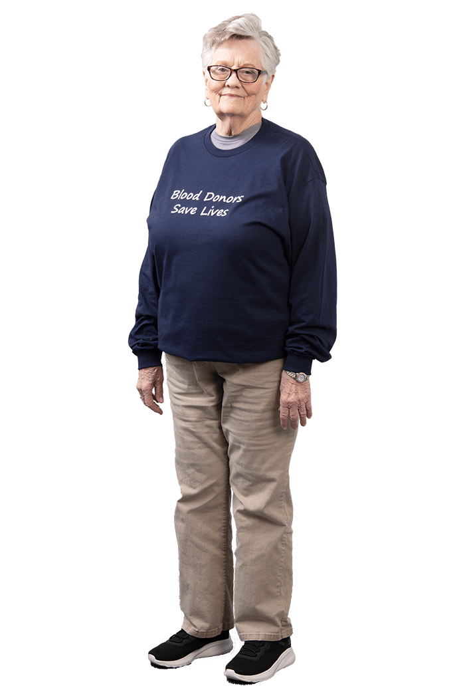
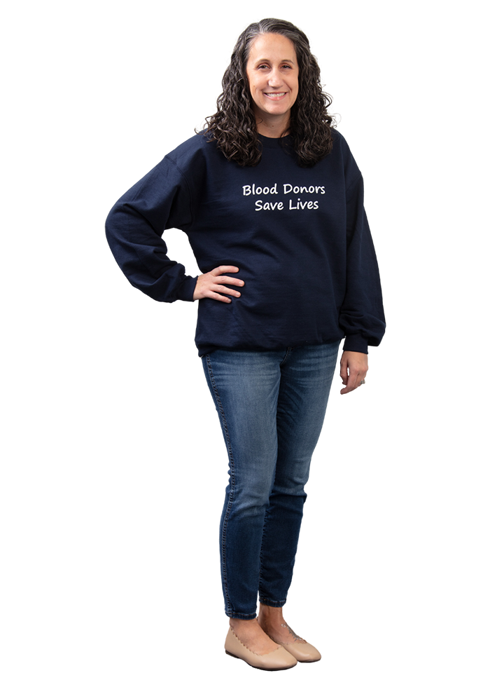
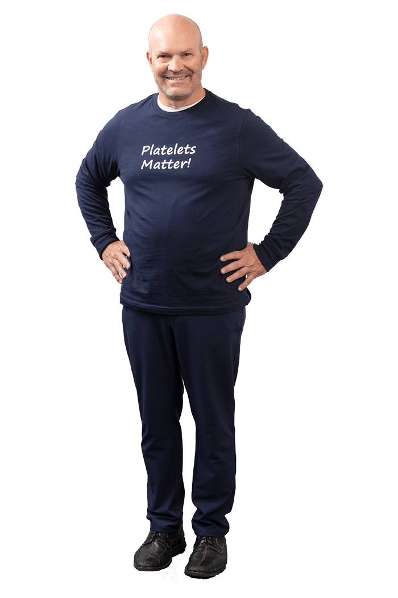

South Bend Medical Foundation is the primary supplier of life-saving blood to our local hospitals. In all, more than 15 facilities rely on SBMF to have blood available when needed. Every pint you donate goes to a real Michiana patient: a trauma victim, a NICU baby, a sickle cell warrior, someone's mom mid-surgery. One donation may help save up to two lives.

When a unit of donated whole blood arrives at the SBMF processing center, it gets separated into two components (red blood cells and plasma), and each component can go to a different patient with a different medical need. That's where "one donation, up to two lives" comes from. It's not marketing language. It's how blood actually works.
Carry oxygen. Used for trauma, surgery, anemia, sickle cell, and cancer treatment.
Carries clotting factors. Used for severe bleeding, burns, and liver failure.
Stop bleeding. Used heavily in cancer and transplant care.
One hour in the donor chair = two patients helped.
* SBMF uses a separate donation process for platelets that collects the platelets and returns the rest of your blood back to you during the donation. Ask your phlebotomist how you can become a platelet donor.
Behind every pint is a name. These are neighbors who needed blood when their lives depended on it, and neighbors who showed up to give so it would be there.
Real patients treated by our local hospitals using blood supplied by SBMF.

We met Karlie when she was just five years old and had her picture on the back of one of our transportation trucks. In May of 2023, she had her fourth open heart surgery for Bartonella Endocarditis (Cat Scratch Disease), and during her stay she received 15 units of red blood cells, 8 units of platelets, and 24 units of plasma. Her third open heart surgery had been delayed a total of five times due to typing and blood shortages, so donate blood, so that people like Karlie can have treatment when it's needed.

In July of 2019, Michael was tubing with family on a local lake when the boat was accidentally bumped into reverse and caught him in the propeller. He was flown by MedFlight helicopter to Memorial Hospital South Bend, where he needed 11 units of blood that night to save his life, and 19 units in total. Before his sixth surgery, he and his wife pledged that they would start donating once he was released, and today they host an annual blood drive and give regularly.

Terry successfully battled leukemia at the age of five. About 23 years later, within a single 24 hour span, he was in the ER battling sepsis, strep pneumonia, sinus infection, and multi organ failure, and in December of 2019 surgeons amputated both legs below the knee. "Without blood donors I might not be here today, and for that, I thank you," said Terry. Today he enjoys spending time with his daughter, Gracie, and the rest of his family. His friends and family called him Mullet Strong then, and he remains Mullet Strong today.

If you donate at one of our locations, Annie might be the phlebotomist drawing your blood. She has worked at SBMF for over 10 years putting donors at ease, but three years ago she found herself as a recipient of those very lifesaving units she had collected, battling colon cancer. Annie survived her battle with cancer, and today she loves spending time with her son and grandson.
Michiana neighbors who roll up a sleeve, again and again, so the blood is there when a patient needs it.

Laurence is the head baseball coach at Washington High School, and as a father of five he knows the importance of blood donations. He has coached his players to give back to the community by donating, and as a donor himself, he is keenly aware of the impact of Sickle Cell Disease on the black and brown communities, where some patients require numerous transfusions and sometimes several units at a time.

Shelby began donating blood at the age of 83, when her granddaughter-in-law was diagnosed with stage 5 kidney disease. At her age the doctor wouldn't allow her to go through testing to donate her kidney, but she felt like there was something she needed to do, and donating blood was just the thing. Shelby wishes she had started donating earlier in life, and through her own journey she hopes to help spread her granddaughter-in-law Nga's story as she searches for a kidney.

In late December of 2014, Stephanie and her husband John received a phone call from John's brother-in-law: a car accident had claimed the lives of John's parents and seriously injured his sister and nephew. In an instant, everything changed for the families as they concentrated on supporting each other through the recovery. John's father had been an avid donor, and Stephanie and John have hosted a blood drive in his honor ever since. "We understand how fragile life is, and that blood banks save lives," said Stephanie.

Platelets matter, and Ron Bondurant knows that is true. About fourteen years ago, his mother was diagnosed with leukemia, and she received platelets throughout the year she battled the disease. Ron was thankful for the extended time it gave them together, and today he donates platelets in her honor.
SBMF is the primary supplier to the local hospitals your family trusts. Here's who's actually receiving what you give.
A single severe trauma can require dozens of units during resuscitation. Donated blood is what makes survival possible in the first hour.
People with sickle cell disease may need up to 100 units of blood every year, year after year, just to manage the condition.
Chemo destroys not just cancer cells but the bone marrow that makes blood. Cancer patients depend on regular transfusions to stay alive between treatments.
A 1-kg premature baby has only ~100 mL of blood. A single NICU transfusion is life-or-death.
Open-heart surgery, organ transplants, postpartum hemorrhage. Someone in the U.S. needs blood every two seconds.
SBMF runs about 40 blood drives every month across high schools, employers, churches, hospitals, and civic organizations all across northern Indiana and southwestern Michigan. Find one near you, walk in, and roll up your sleeve.
Don't see a drive that works? You can also donate any week at one of our three permanent donor centers (below), or have SBMF bring a drive to your school, workplace, or community.
Walk in or book ahead. Pick the location that works for you.
3355 Douglas Road, South Bend, IN 46635
(574) 234-1157
1290 Ireland Rd, Ste. 700, South Bend, IN 46614
(574) 234-1157
2222 Rieth Blvd, Ste. 105, Goshen, IN 46526
(574) 204-4040
Red blood cells expire after 42 days. Platelets last only 5. Every drop of blood you gave three months ago has either saved someone or is no longer available, which is why blood banks depend on regular donors who come back every 56 days, year after year. Healthy donors can give whole blood every 56 days, up to 6 times a year. SBMF rewards consistent donors through five Blood Donor Club programs.
Donate at least 5 times in a year and you'll be invited to the 5/6 Donor Appreciation Dinner in March.
You'll also be recognized on our video monitors at all SBMF donor centers.
No signup needed. Get your donations in by December 31 and your invite will arrive in the mail.
Apheresis donation (also called platelet donation) lets you give specific blood components like platelets, while everything else is returned to you. The process takes about 70 minutes to two hours, so bring a movie or just relax.
Platelets are critical for cancer patients, transplant recipients, trauma victims, and open-heart surgery patients.
If your last donation didn't go as smoothly as you hoped, we want you back. Red Line pairs you with a senior phlebotomist on your next visit, plus extra measures during the donation itself (chair-tipping, water, snacks) to make sure the experience is a better one this time around.
Questions? Contact Leslie Crawford at 574-204-4393 or lcrawford@sbmf.org.
Give blood, bring a friend! Bring a friend with you who hasn't donated before and you'll each receive a $10 e-gift card with successful donations.
New platelet donors will receive a one-time $20 e-gift card for a successful platelet donation and become eligible for the platelet loyalty program.
Companies, schools, churches, fire departments, and civic groups across Michiana host SBMF blood drives every month. SBMF brings the team and the bloodmobile. You bring the people.
To host a drive, SBMF typically asks for around 15 people signed up in advance so the crew and bloodmobile have enough donors to make your drive a success.
One donation. About an hour. Up to two lives helped. Walk into a donor center, find a drive happening near you this month, or book ahead online.